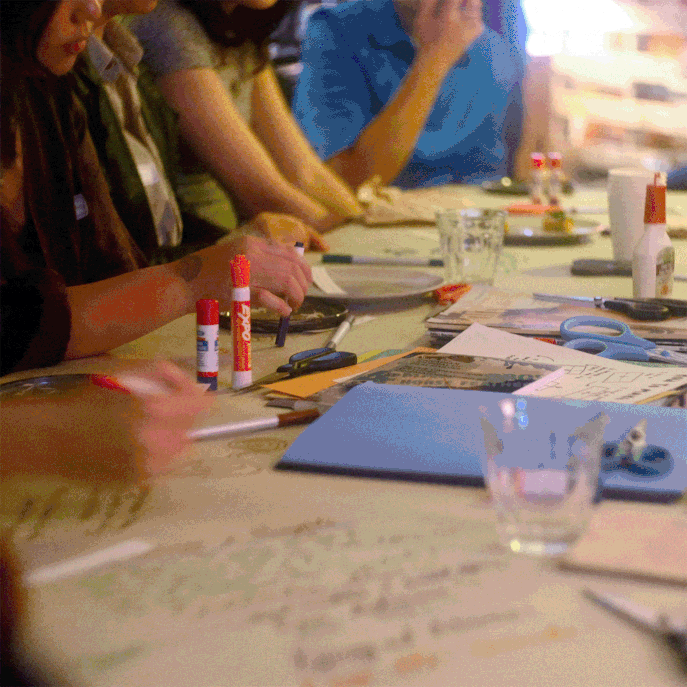
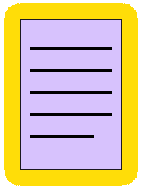
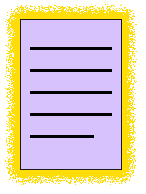

EXCHANGE
HUB

During this visit, make sure your window size is set correctly. You can click on anything highlighted in yellow, and doors highlighted blue will take you to the next room. Pro tip: Try to befriend the cat!
Here’s a prospective list of the organisations we at Brique par Brique are excited to continue working with at our new community centre!
Agir,
Metonymy Press,
DJTAL,
Applied Archive,
Arts in the Margins,
Articule,
CNCLT,
Glass Half Full Podcast,
Queer Sangha,
Akiwacu,
Parc-Exchange,
Parc-Ex Curry,
Parc-Ex Mutual Aid,
CAPE Forum,
L’Atelier Culture Vélo,
and many more!
keep exploring →

photos taken at a variety of BxB events



